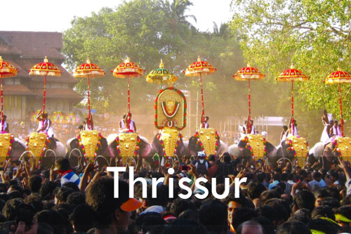

Pathanamthitta
Pathanamthitta district is known as the Headquarters of Pilgrimage Tourism, of the Kerala State. Situated near the Western Ghats and bordered by the hills, Pathanamthitta district is a treat to eyes with its vast unending stretches of forests, rivers and rural landscapes. Blessed by nature, the district is famous for its scenic beauty, fairs and festivals. Land of Lord Ayyappa is the tag-line of Pathanamthitta tourism. Pathanamthitta attracts a large number of tourists every year. Pilgrim centres and other eco tourism spots like Gavi and Adavi are most visited in Pathanamthitta.Places around Pathanamthitta city within a distance of 15 km include, Elanthoor, Ranny, Vadaserikara, Kozhencherry, Vechoochira, Kadammanitta, Vazhamuttom, Adoor, Pandalam, Manjinikara, Mathoor, Cheekanal, Omallur, Malayalappuzha, Kodumthara, Elavumthitta-Muloor Smarakam, Kodumon, Kalanjoor, Ayroor Cherukolpuzha, Ulanadu, Kaipattoor, Mylapra, Uthimoodu, Thumpamon, Maroor, Pramadom, Konni, Chengara and Valamchuzhy. The places beyond these are Thiruvalla, Nilackal, Parumala, and Maramon. Pathanamthitta lies on the road route to the pilgrim town of Sabarimala, which is 65 km away. The Chettikulangara temple, at Mavelikkara is about 35 km from Pathanamthitta.
Top Tourist Spots


